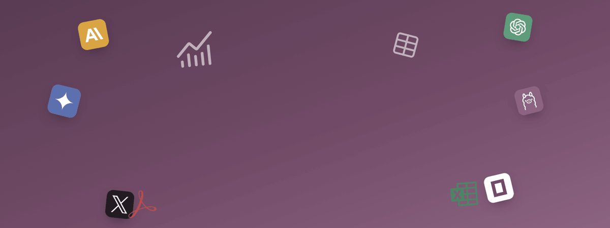

Its own agents, running inside Odoo, powered by the LLM provider you choose. Register tools, control access per group, and chat with them directly inside Odoo 18.
Not just another chatbot widget — a gateway with real access control behind it.
The agent lives in Odoo, not in someone else's app. You just choose which provider powers its brain — Anthropic, OpenAI, Gemini, Ollama, Grok, or OpenCode — and can swap it per agent without rebuilding anything.
Register Odoo ORM actions, HTTP APIs, or external MCP servers as callable tools — no code required.
Group-based rules decide exactly which tools, models, and agents each user can reach — with rate limits on top.
Every tool call, token, and cost is logged per session — searchable per user, per agent.
Separate from the chat feature above — an Odoo-hosted MCP server makes your registered tools callable from other AI apps, and an MCP client can pull in tools from any external MCP server you point it at.
Real screens from a running install.
Every model the provider exposes shows up live in the picker — switch an agent's brain without touching its tools, prompts, or history.
Every configured agent shows up as its own card — sessions, tokens, and cost already visible — pick one and you're straight into a live conversation.
Ask for "sales by customer this year" and the agent runs the query and hands back an actual chart — with View and Download built in.
Every chart an agent generates lands in a searchable gallery — reusable, shareable, restylable, without opening the AI chat again.
Three real clips from a live install — setup, configuration, and chat.
A closer look at the five areas that do the most work.
The agent itself runs inside Odoo — it isn't handed off to some other app. Each agent just calls out to whichever provider's model you assign it, and that choice can be changed per agent without touching its tools, prompts, or conversation history.
A tool is anything an agent is allowed to call — registered from the UI, no Python required.
Access rules decide what each user group can reach, before a single tool call is made.
Every conversation keeps a full, searchable record of what actually happened.
A separate, optional layer on top of the chat feature above — for teams already working with the Model Context Protocol.
Three steps, in order — from install to your first answer.
Install the module, add a provider API key (or point at a local Ollama instance).
Create an agent, choose its model, and decide which tools and Odoo models it can touch.
Chat with the agent inside Odoo — it reads real data, runs real tools, and can draw what it finds.
Every one of these is a real, working feature — not a roadmap item.
Anthropic, OpenAI, Gemini, Ollama, Grok/xAI, OpenCode.
Make your own Odoo tools callable from other AI clients.
Pull tools in from any external MCP server you configure — for example, third-party WhatsApp or YouTube MCP servers.
ORM actions, HTTP APIs, or MCP tools — register without writing code.
Restrict tools, models, and agents per user group.
Cap how often each agent can be called, per group.
Every tool call logged and searchable, per session.
See exactly what every conversation cost, per user.
Agents keep persistent context across a session.
Fire an agent from automations and external systems.
A modern, native chat UI built right into Odoo.
Everything the chat UI can do, callable externally.
Dashboards drawn on request, via the Ai Chart module.
Reusable starter prompts per agent, ready on day one.
Runs entirely on packages Odoo already ships with.
Switch any time — the agent, its tools, and its history stay put.
What this module actually requires — no surprises.
Zero extra pip installs. Every Python package this module uses already ships with Odoo itself.
wkhtmltopdf, only for AI-generated PDF exports — the same binary Odoo already needs for its own reports.
One provider API key, or a local Ollama install. No cloud dependency is required to run this.
Works everywhere Odoo does — Odoo Online, Odoo.sh, and On-Premise.
Anthropic, OpenAI, Gemini, Ollama, Grok (xAI), and OpenCode. Switch providers per agent without losing its tools, prompts, or conversation history.
Yes, for any hosted provider (Anthropic, OpenAI, Gemini, Grok, OpenCode). Ollama runs fully offline — no key, no cloud dependency.
Yes. Access rules restrict exactly which tools, models, and agents each user group can reach, with per-group rate limits on top.
Every tool call, token count, and cost is recorded per session — searchable per user and per agent.
Yes — Odoo Online, Odoo.sh, and On-Premise installs are all supported.
Preciseways offers a wide range of services to fulfil your business needs.
Full range of Odoo ERP software development for a wide variety of verticals and businesses.
Business consultation to remain cost effective by keeping up with the latest software and hardware.
We build solutions for specific business problems, customized to the workflows they need to manage.
Robust migration from existing systems, with upgrades and clean transfer to a new setup.
Guidance and training so your team understands the software, with constant support after.
Constant support over phone, email, and on-site or off-site after a successful installation.
More Odoo modules from Preciseways.